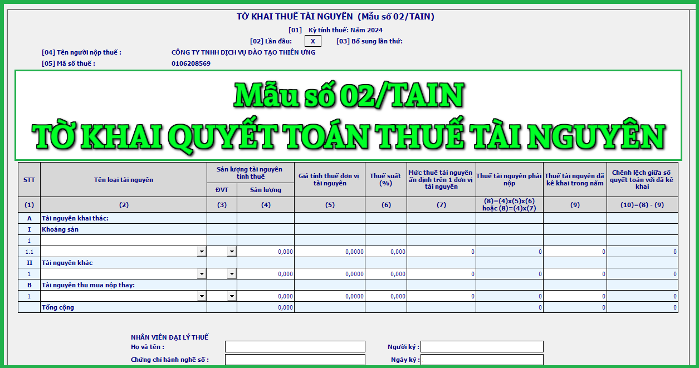

Mẫu Tờ khai quyết toán thuế tài nguyên áp dụng đối trường hợp người nộp thuế có hoạt động khai thác tài nguyên quyết toán thuế tài nguyên mới nhất năm 2024 là mẫu số: 02/TAIN được ban hành kèm theo Thông tư số 80/2021/TT-BTC.
|
CỘNG HOÀ XÃ HỘI CHỦ NGHĨA VIỆT NAM
Độc lập - Tự do - Hạnh phúc TỜ KHAI QUYẾT TOÁN THUẾ TÀI NGUYÊN [01] Kỳ tính thuế: Năm ....... [02] Lần đầu: * [03] Bổ sung lần thứ:…
[04] Tên người nộp thuế:.....................................................................
[05] Mã số thuế: [06] Tên đại lý thuế (nếu có):............................................................... [07] Mã số thuế: [08] Hợp đồng đại lý thuế: Số:....................... ngày:............................... [09] Địa chỉ nơi khai thác tài nguyên khác tỉnh với nơi đóng trụ sở chính: [09a] Phường/xã: …. [09b] Quận/huyện:……... [09b] Tỉnh/Thành phố: ...............
Đơn vị tiền: Đồng Việt Nam
Tôi cam đoan số liệu khai trên là đúng và chịu trách nhiệm trước pháp luật về số liệu đã khai./.
|
||||||||||||||||||||||||||||||||||||||||||||||||||||||||||||||||||||||||||||||||||||||||||||||||||||||||||||||||||||||||||||||||||||||||||||||||||||||||||||||||||||||||||||||
Cách kê khai Tờ khai quyết toán thuế tài nguyên - mẫu số 02/TAIN theo TT 80/2021 như sau:
Chỉ tiêu [01]: - Kỳ tính thuế: Khai kỳ tính thuế là tháng phát sinh nghĩa vụ thuế. Trường hợp người nộp thuế được cơ quan thuế chấp thuận khai thuế theo quý hoặc người nộp thuế mới thành lập thì ghi kỳ tính thuế là quý phát sinh nghĩa vụ thuế.
Chỉ tiêu [02], [03]: Tích chọn “Lần đầu”. Trường hợp người nộp thuế phát hiện hồ sơ khai thuế lần đầu đã nộp cho cơ quan thuế có sai, sót thì kê khai bổ sung theo số thứ tự của từng lần bổ sung.
Lưu ý:
+ NNT thực hiện khai điện tử, Hệ thống Etax hỗ trợ NNT xác định Tờ khai thuế “Lần đầu” tương ứng với từng hoạt động sản xuất kinh doanh tại chỉ tiêu [01a] .
+ Kể từ thời điểm Hệ thống Etax có Thông báo chấp nhận hồ sơ khai thuế đối với Tờ khai thuế “Lần đầu”, các Tờ khai thuế tiếp theo của cùng kỳ tính thuế, cùng hoạt động sản xuất kinh doanh là tờ khai “Bổ sung”. NNT phải nộp Tờ khai “Bổ sung” theo quy định về khai bổ sung.
Chỉ tiêu [04], [05]: Khai thông tin “Tên người nộp thuế và mã số thuế” theo thông tin đăng ký doanh nghiệp hoặc đăng ký thuế của người nộp thuế.
Lưu ý:
+ Đây là thông tin bắt buộc. NNT khai thuế điện tử, sau khi điền đầy đủ, chính xác thông tin “Mã số thuế”, Hệ thống Etax tự động hỗ trợ hiển thị thông tin về “Tên người nộp thuế”.
Chỉ tiêu [06], [07], [08]: Trường hợp Đại ký thuế thực hiện khai thuế: Khai thông tin “Tên đại lý thuế, mã số thuế” “số, ngày của hợp đồng đại lý thuế”. Đại lý thuế phải có tình trạng đăng ký thuế “Đang hoạt động” và Hợp đồng phải đang còn hiệu lực tương ứng tại thời điểm khai thuế.
Lưu ý:
+ NNT khai thuế điện tử, Hệ thống Etax tự động hỗ trợ hiển thị thông tin về Đại lý thuế, Hợp đồng đại lý thuế đã đăng ký với cơ quan thuế để NNT lựa chọn trong trường hợp NNT có nhiều Đại lý thuế, Hợp đồng.
Chỉ tiêu [09]: Kê khai thông tin địa bàn nơi NNT có hoạt động khai thác tài nguyên khác tỉnh với nơi đóng trụ sở chính theo quy định tại Điểm g Khoản 1 Điều 11 Nghị định số 126/2020/NĐ-CP ngày 19/10/2020 của Chính phủ. Trường hợp người nộp thuế có hoạt động khai thác tài nguyên trên nhiều huyện thì thực hiện khai vào chỉ tiêu này như sau:
+ Nếu Cục Thuế là cơ quan thuế quản lý thu, người nộp thuế khai 01 huyện đại diện nơi có phát sinh hoạt động khai thác tài nguyên.
+ Nếu Chi cục Thuế khu vực là cơ quan thuế quản lý thu, người nộp thuế khai 01 huyện đại diện thuộc Chi cục Thuế khu vực nơi có phát sinh hoạt động khai thác tài nguyên.
Trường hợp người nộp thuế có văn bản giao cho đơn vị phụ thuộc trên địa bàn có hoạt động khai thác tài nguyên khác tỉnh với nơi đóng trụ sở chính trực tiếp kê khai, nộp thuế tài nguyên thì không phải khai vào chỉ tiêu này.
A - Phần kê khai các chỉ tiêu của bảng:
Cột số (1) “Số thứ tự”: NNT ghi thứ tự từng loại tài nguyên khai thác, thu mua nộp thay, tài nguyên bắt giữ, tịch thu tương ứng với từng mức thuế suất đối với từng loại tài nguyên trong Biểu thuế và tính chất của hoạt động khai thác, thu mua nộp thay, tài nguyên bắt giữ, tịch thu trong kỳ.
Cột số (2) “Tên loại tài nguyên”:
Mỗi loại tài nguyên khai thác, thu mua nộp thay, tài nguyên bắt giữ, tịch thu theo từng nhóm, loại tài nguyên quy định tại Thông tư số 44/2017/TT-BTC ngày 12/5/2017, Thông tư số 05/2020/TT-BTC ngày 20/01/2020, Bảng giá tính thuế tài nguyên của các tỉnh/thành phố tương ứng với từng mức thuế suất trong Biểu thuế suất thuế tài nguyên được kê khai vào một dòng của tờ khai.
Mục I: Chỉ tiêu “Tài nguyên khai thác”
NNT khai tên của tài nguyên khai thác theo từng nhóm, loại tài nguyên quy định tương ứng với từng mức thuế suất theo quy định, đồng thời theo từng mỏ khoáng sản. Mỗi loại tài nguyên được kê khai vào một dòng của tờ khai.
Cụ thể như sau:
- Trường hợp tài nguyên khai thác vừa tiêu thụ nội địa, vừa xuất khẩu thì người nộp thuế khai thành 2 dòng riêng biệt: tài nguyên tiêu thụ nội địa và tài nguyên xuất khẩu;
- Trường hợp tài nguyên khai thác có chứa nhiều chất khác nhau thì khai theo từng chất trong tài nguyên khai thác.
Mục II: Chỉ tiêu “Tài nguyên thu mua nộp thay”
Tổ chức, cá nhân thu mua nộp thay tài nguyên từ các tổ chức, cá nhân nhỏ lẻ và cam kết chấp thuận bằng văn bản về việc kê khai nộp thuế thay tổ chức, cá nhân khai thác thì tổ chức, cá nhân thu mua nộp thay nộp thuế thay phải kê khai tài nguyên thu mua nộp thay, mỗi loại tài nguyên thu mua được kê khai vào một dòng tương ứng với thuế suất theo quy định.
Mục III: Chỉ tiêu “Tài nguyên bắt giữ, tịch thu”
Tổ chức được giao bán tài nguyên bị bắt giữ, tịch thu phải kê khai nộp thuế đối với những loại tài nguyên này trước khi trích các khoản chi phí liên quan đến hoạt động bắt giữ, đấu giá, trích thưởng theo chế độ. Mỗi loại tài nguyên bị bắt giữ, tịch thu được kê khai vào một dòng tương ứng với thuế suất theo quy định.
Lưu ý: Đối với tổ chức, cá nhân khai thác tài nguyên mà không phát sinh hoạt động thu mua gom tài nguyên hoặc không phát sinh hoạt động bán tài nguyên bị bắt giữ, tịch thu thì chỉ kê khai tài nguyên khai thác tại Mục I; trường hợp chỉ phát sinh hoạt động thu mua nộp thay tài nguyên nộp thuế thay thì kê khai vào mục II, trường hợp chỉ phát sinh hoạt động giao bán tài nguyên bị bắt giữ, tịch thu thì kê khai vào mục III; Đối với tổ chức, cá nhân phát sinh cả ba hoạt động khai thác, hoạt thu mua nộp thay tài nguyên mà có cam kết bằng văn bản nộp thuế thay tổ chức, cá nhân khai thác và hoạt động giao bán tài nguyên bị bắt giữ, tịch thu thì tổ chức, cá nhân đó phải kê khai cả ba mục I, II, III.
Cột số (3) “Đơn vị tính”: NNT ghi đơn vị tính của từng loại tài nguyên khai thác, thu mua nộp thay, tài nguyên bắt giữ, tịch thu giao bán theo kg, m3, tấn, thùng, KW/h….
Cột số (4) “Sản lượng”: NNT ghi sản lượng của từng loại tài nguyên khai thác, thu mua nộp thay, tài nguyên bắt giữ, tịch thu giao bán trong kỳ vào cột (4); số liệu ghi vào cột này có thể là số lượng, khối lượng, trọng lượng tài nguyên thương phẩm, không phụ thuộc vào mục đích khai thác tài nguyên.
Cột số (05) “Giá tính thuế đơn vị tài nguyên”: theo pháp luật về thuế tài nguyên.
Cột số (6) “Thuế suất”: Thuế suất của mỗi tài nguyên khai thác, thu mua nộp thay, tài nguyên bắt giữ, tịch thu phát sinh trong kỳ được ghi vào cột (6) được căn cứ theo mức thuế suất quy định tại Biểu mức thuế suất đối với các loại tài nguyên, trừ dầu thô và khí thiên nhiên, khí than hiện hành.
Cột số (7) “Mức thuế tài nguyên ấn định trên một đơn vị tài nguyên”: Số liệu ghi vào cột này là mức thuế tài nguyên ấn định trên một đơn vị tài nguyên của cơ quan có thẩm quyền quy định.
Cột số (8) “Thuế tài nguyên phải nộp theo quyết toán năm”:
Thuế tài nguyên phải nộp theo quyết toán năm được xác định như sau:
- Thuế tài nguyên phải nộp theo quyết toán năm = Sản lượng tài nguyên tính thuế x Giá tính thuế đơn vị tài nguyên x Thuế suất thuế tài nguyên
Hoặc:
- Thuế tài nguyên phải nộp theo quyết toán năm = Sản lượng tài nguyên tính thuế x Mức thuế tài nguyên ấn định trên một đơn vị tài nguyên khai thác
Cột (9): Chỉ tiêu “Thuế tài nguyên đã kê khai trong năm”
Số liệu để ghi vào chỉ tiêu này là số liệu luỹ kế số thuế tài nguyên đã kê khai của từng loại tài nguyên của các tháng trong năm. NNT căn cứ vào số liệu tại chỉ tiêu “Thuế tài nguyên phát sinh phải nộp” (cột 8) trên các tờ khai thuế tài nguyên mẫu 01/TAIN của các tháng để kê khai tổng hợp vào cột (9).
Cột (12): Chỉ tiêu “Chênh lệch giữa số quyết toán với số kê khai”
Chỉ tiêu này phản ánh chênh lệch số thuế tài nguyên giữa số thuế quyết toán với số đã kê khai các tháng trong năm của tài nguyên khai thác, thu mua gom. Chỉ tiêu này được xác định như sau:
- Chênh lệch giữa số quyết toán với kê khai = Thuế tài nguyên phát sinh phải nộp trong kỳ (trong năm) - Thuế tài nguyên đã kê khai trong kỳ
Chi tiêu: “Tổng cộng”:
Số liệu tại dòng này là tổng các cột (4), (8), (9), (10) cụ thể như sau:
Cột (4): Là tổng cộng sản lượng tài nguyên phát sinh trong kỳ.
Cột (8): Là tổng số thuế tài nguyên phải nộp theo quyết toán năm.
Cột (9): Là tổng số thuế tài nguyên đã kê khai trong năm.
Cột (10): Là tổng số thuế chênh lệch giữa số quyết toán với đã kê khai.
B - Phần ký tên, đóng dấu:
Người đại diện theo pháp luật của NNT hoặc người đại diện hợp pháp của người nộp thuế ký tên, đóng dấu hoặc ký điện tử để nộp tờ khai đến cơ quan thuế và chịu trách nhiệm trước pháp luật về số liệu đã khai. Trường hợp đại lý thuế khai thay cho người nộp thuế thì người đại diện theo pháp luật của đại lý thuế ký tên, đóng dấu hoặc ký điện tử thay cho NNT và ghi thêm thông tin họ và tên nhân viên đại lý thuế trực tiếp thực hiện khai thuế và số chứng chỉ hành nghề của nhân viên này vào thông tin tương ứng.
